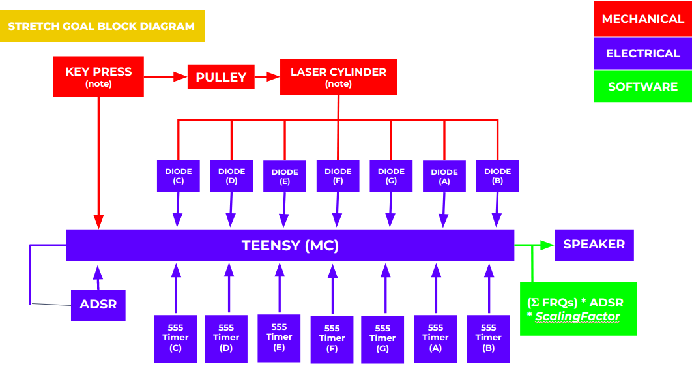

For this sprint, we put together the whole structure with the lasers and electrical system the night before and took a video for the sprint review. In the sprint, we were able to (mostly) meet our mvp and be able to play notes after the user input. After we presented our sprint review, we seemed to not have explained the overall system super well and had a few questions regarding that. We received some feedback on overall concerns about our project. One of the main topics was the size of the circuit we’re dealing with and fitting that into our system. Additionally, many were impressed by what we accomplished on the electrical side.
Kyle, our saviour, told us about how we can set where the voltage goes and pass through each laser individually and fast enough so that it looks like all of them are on. Stan also told us the lasers need a resistor in series and that we need to measure the current across the laser.